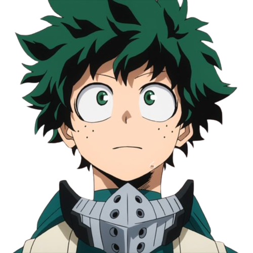
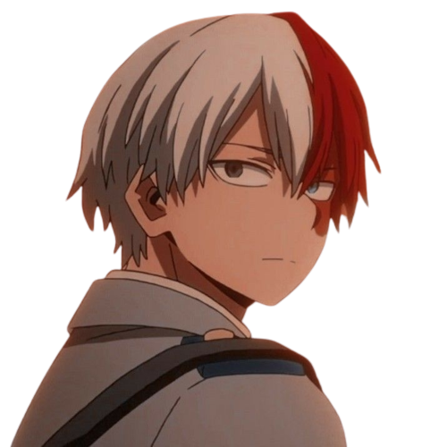
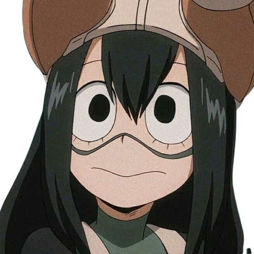
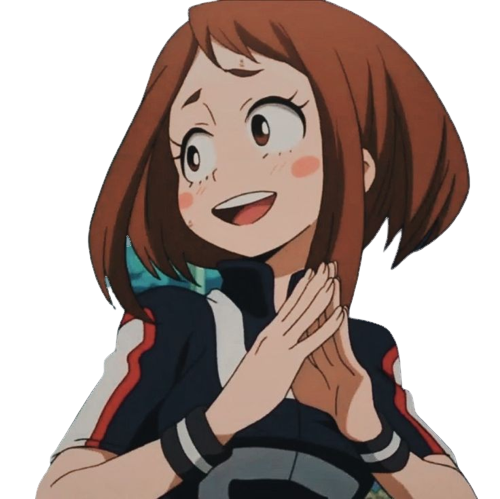

-
Izuku Midoriya
HP 1200
Descrição
Protagonista de Boku no Hero, Izoku Midoriya, uma criança que nasceu sem individualidade em um mundo de hérois, onde todos nascem com diferentes poderes/habilidades, herda o One for All do maior héroi de todos (All Might) e a sua inspiração para se tornar um grande héroi
-
Katsuki Bakugo
HP 1000

Descrição
É um dos principais estudantes da U.A., estando na turma 1-A obtendo sempre as melhores notas. Possui uma personalidade agressiva e desagradável sendo até mesmo adepto de práticas de bullying para se autoafirmar. Mas, quebrando o padrão do “bad boy sem cérebro”, Katsuki é extremamente inteligente, se mostrando um exímio estrategista em diversas lutas da série.
-
Shoto Todoroki
HP 1350
Descrição
É um estudante da Classe 1-A na U.A. Onde ele entrou por meio de recomendações oficiais e está treinando para se tornar um Pro Hero. Ele é o filho mais novo de Endeavor, o antigo número 2, e atual número 1, Pro Hero.
-
Tsuyu Asui
HP 1165
Descrição
Também conhecida como Froppy, uma das alunas mais prestigiadas de U.A. É umas das principais coadjuvantes de My Hero Academia. Sua maior característica é a aparência, que assemelha-se à de um sapo, dando mais ênfase à sua individualidade, que consiste em ter todas as habilidades desse animal.
-
Ochaco Uraraka
HP 1155
Descrição
Conhecida como Uravity, é uma estudante da U.A e interesse romântico de Izuku Midoriya. É uma das protagonistas de My Hero Academia.
-
All Might
HP 2000

Descrição
All Might foi o oitavo titular do One For All Quirk depois de recebê-lo de Nana Shimura. Desde então, ele passou a tocha para Izuku Midoriya, a quem está treinando para ser seu sucessor. Depois de usar todas as brasas de One For All para derrotar All For One , All Might se aposentou e terminou sua era como o maior herói do mundo.